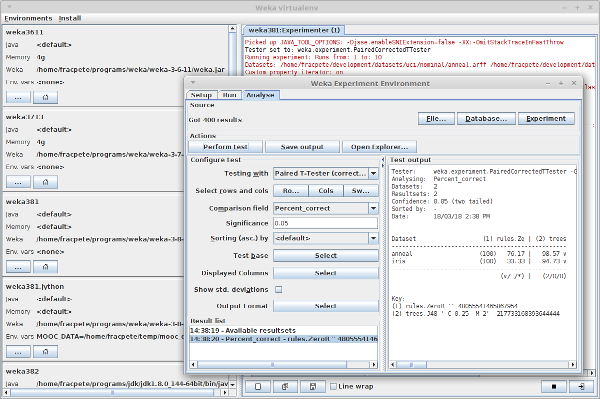
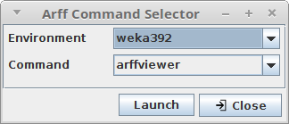

Virtual environment manager for Weka, inspired by the extremely useful virtual environments that Python supports.
weka-virtualenv can be used for launching the GUI or arbitrary Weka classes.
Since weka-virtualenv uses options starting with double-dashes (--), clashes with
Weka options are avoided. Any option that wasn't consumed by weka-virtualenv
will get further processed by the command. E.g., when launching the Explorer
using the explorer command, a dataset can be supplied to load immediately,
or, when executing a classifier using the run command, any additional option
will get passed to the Weka class.
You can use the tool either through the command-line or through its user
interface. Some basic scripting support is available through the script
command-line command (see Scripting section).
How it works
The tool simply uses existing Weka functionality, namely the WEKA_HOME
environment variable, for separating the various environments.
When launching a class or GUI tool, it launches a new Java process with the
WEKA_HOME environment variable pointing to the current environment's
wekafiles directory.
If an environment has no Java or heap size configure (<default>), then it
just uses the system's default settings for launching the new process.
User interface
You can start the GUI with the following script from the bin directory:
- Linux/Mac:
wenvgui.sh - Windows:
wenvgui.bat

Arff Command Selector
This little tool lets you choose environment and application (Explorer or Arff Viewer) to launch, using the provided dataset filenames (e.g., Open with from the right-click mouse context menu):
- Linux/Mac:
wenvarff.sh - Windows:
wenvarff.bat

Videos
You can find videos for the tool in the following YouTube playlist:
Windows users just have to substitute the wenv.sh and wenvgui.sh scripts
with wenv.bat and wenvgui.bat. For adding the tool's bin directory to
your PATH environment variable (to make it available from the command prompt),
follow these instructions.